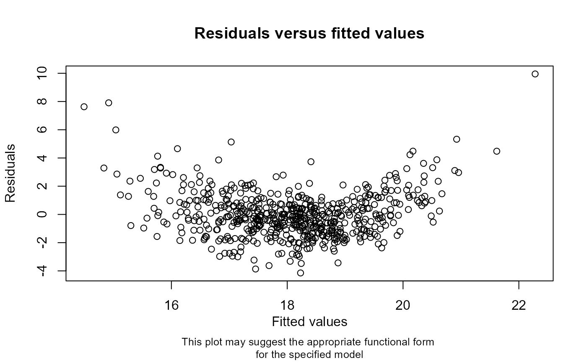

Specify and inspect parametric model specification
checkModSpec.RdSpecify a parametric model (which may represent the analysis or imputation model). Optionally, if a dataset is supplied, explore whether the observed relationships in the specified dataset are consistent with the proposed parametric model.
Arguments
- formula
A symbolic description of the model to be fitted, with the dependent variable on the left of a ~ operator, and the covariates, separated by + operators, on the right, specified as a string
- family
A description of the error distribution and link function to be used in the model, specified as a string; family functions that are supported are "gaussian(identity)" and "binomial(logit)"
- data
Optionally, a data frame containing all the variables stated in the formula
- plot
If TRUE (the default), and a dataset is supplied, displays a plot which can be used to explore the functional form of each covariate in the specified model if there is evidence of model mis-specification; use plot = FALSE to disable the plot
- message
If TRUE (the default), and a dataset is supplied, displays a message indicating whether the relationships between the dependent variable and covariates are likely to be correctly specified or not; use message = FALSE to suppress the message
Value
An object of type 'mimod' (a list containing the specified formula, family, and, if specified, dataset name). Optionally, if required and a dataset is supplied, a message indicating whether the relationships between the dependent variable and covariates are likely to be correctly specified or not. If there is evidence of model mis-specification, optionally returns a plot of the model residuals versus the fitted values which can be used to explore the appropriate functional form for the specified model.
References
Curnow E, Carpenter JR, Heron JE, et al. 2023. Multiple imputation of missing data under missing at random: compatible imputation models are not sufficient to avoid bias if they are mis-specified. J Clin Epidemiol. doi:10.1016/j.jclinepi.2023.06.011
Examples
# Example (incorrectly) assuming a linear relationship
checkModSpec(formula="bmi7~matage+mated+pregsize",
family="gaussian(identity)", data=bmi)
#> Model mis-specification method: regression of model residuals on a
#> fractional polynomial of the fitted values
#>
#> P-value: 0
#>
#> A small p-value means the model may be mis-specified. Check the
#> specification of each relationship in your model, noting that the
#> observed relationships may be distorted by data missing not at random.

## For the example above, (correctly) assuming a quadratic relationship
checkModSpec(formula="bmi7~matage+I(matage^2)+mated+pregsize",
family="gaussian(identity)", data=bmi)
#> Model mis-specification method: regression of model residuals on a
#> fractional polynomial of the fitted values
#>
#> P-value: 1
#>
#> A large p-value means there is little evidence of model
#> mis-specification. Note that the observed relationships may be
#> distorted by data missing not at random.